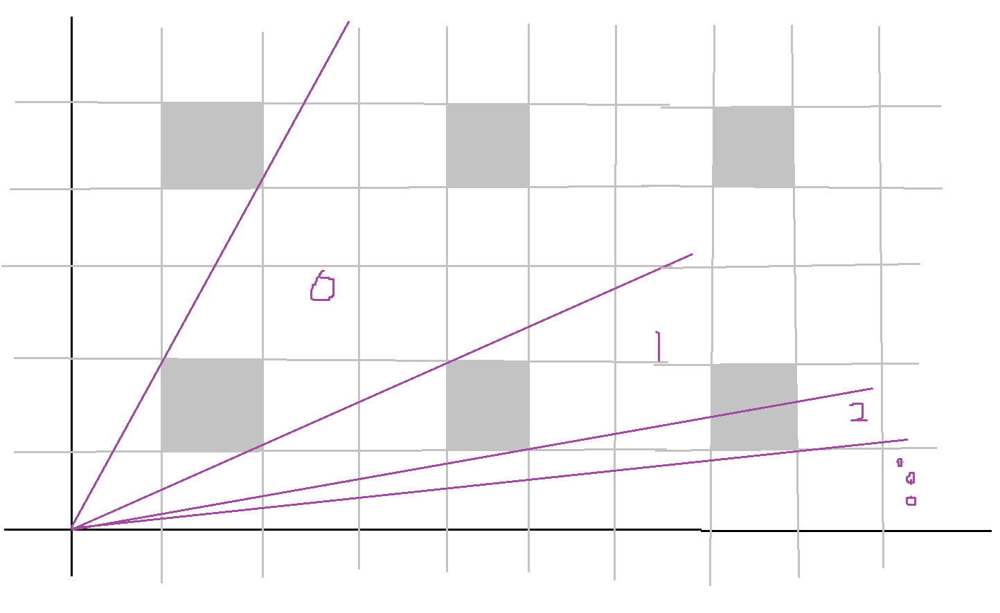

Some (bad) thoughts on the lonely runner conjecture.
Consider \(k\) runners on a circular track of unit length. At \(t = 0\), all runners are at the same position and start to run; the runners' speeds are pairwise distinct. A runner is said to be lonely at time t if they are at a distance of at least \(1/k\) from every other runner at time \(t\). The lonely runner conjecture states that each runner is lonely at some time.
Thought 1: Reformulation in terms of 'state space'
An alternate formulation of the problem is to fix one particular runner as the origin, and view the \(k-1\) other runners from this base-runner's perspective. Now we can describe the system of runners at any point of time by \(x_1,x_2,...,x_{k-1}\) where \(x_i\) is the distance the \(i\)-th runner has travelled. Each \(x_i\) is a variable linear in time however (\(x_i = v_it\) where \(v_i\) is the \(i\)-th runner's velocity) so the system can be viewed as a straight line through \(v-1\) dimensional space starting at the origin. The base runner is 'lonely' if certain conditions are satisfied by the vector \((x_1,x_2,...,x_{k-1})\); namely \( \text{max}\{|\text{frac}(x_i) - 0.5|\} \leq 0.5 - 1/k \) where \(\text{frac}(x)\) denotes the fractional part of the real number \(x\). The subset of the \(k-1\) dimensional state space which satisfy this lonely criterion are hypercubes arranged in a lattice like formation extending in all directions symmetrically. Because of this symmetry, we can assume without loss of generality that \(v_i > 0\).
Thought 2: Space filled by the 'lonely regions'
The subset of the \(k-1\) dimensional state space which satisfy the lonely criterion (the hypercubes) fills up \(e^{-2} \simeq 13.5\)% of the total space as \(k\) approaches infinity.
Proof:
Consider the unit hypercube in the first 'hyperquadrant' (i.e. \(0 \leq x_i \leq 1\) for every coordinate \(x_i\)). If we have \(k\) runners in total, fixing one at the origin, then the state-space is \(\mathbb{R}^{k-1}\), and the subset of the hypercube of the state-space satisfying the lonely criterion has hypervolume:
$$\lim_{k \to \infty}(1 - \frac{2}{k})^{k-1}$$
Substituting \(w = \frac{1}{k}\), we have:
$$\lim_{w \to 0} (1-2w)^{\frac{1}{w}-1}$$
But:
$$\lim_{w \to 0} (1-2w)^{\frac{1}{w}-1} = \lim_{w \to 0} \frac{(1-2w)^{\frac{1}{w}}}{(1-2w)}$$
$$= \frac{ \lim_{w \to 0}(1-2w)^{\frac{1}{w}}}{ \lim_{w \to 0}(1-2w)}$$
$$=\lim_{w \to 0} (1-2w)^{\frac{1}{w}}$$
which I claim to be equal to \(e^{-2}\). Here, I will 'prove' a stronger claim, namely that:
$$f(a) = \lim_{w \to 0} (1+aw)^{\frac{1}{w}} = e^a$$
(Without being too rigorous)
$$\frac{d}{da}f(a) = \frac{d}{da} (\lim_{w \to 0} (1+aw)^{\frac{1}{w}}) = \lim_{w \to 0} (\frac{d}{da} (1+aw)^{\frac{1}{w}})$$
$$= \lim_{w \to 0} (1+aw)^{\frac{1}{w} - 1}$$
$$ = \lim_{w \to 0} \frac{(1+aw)^{\frac{1}{w}}}{(1+aw)}$$
$$ = \frac{\lim_{w \to 0}(1+aw)^{\frac{1}{w}}}{\lim_{w \to 0}(1+aw)}$$
$$ = \lim_{w \to 0} (1+aw)^{\frac{1}{w}} = f(a)$$
So \(f'(a) = f(a)\) and \(f(0) = e^0\), so it can be concluded that \(f(a) = e^a\). (Hooray for unrigorousness).
Thought 3: Quotienting the State Space by the Hypercubes; by method of continuous transformations
The main problem with this method of thinking about the problem is that hypercubes are unwieldy, and difficult to deal with. If we could somehow find a transformation \(T : \mathbb{R}^{k-1} \to \mathbb{R}^{k-1}\) that collapses the boundaries of each of the lonely hypercubes to a single point (singularity), then the question would be reduced to showing that applying this transformation \(T\) to any straight line through the origin results in a path through \(\mathbb{R}^{k-1}\) that passes through a singularity.
Thought 4: The conjecture is easy to verify for \(k = 2\) and \(k = 3\)
Proof:
For \(k = 2\), the statespace corresponds to a single line, (after fixing one of the runners), and the 'lonely' 'hypercubes' in this case are simply points along the line which correspond to the times when the two runners are antipodal. Obviously, as the state moves through the statespace in a line, it must come across one of these 'lonely' points at some stage.
For \(k = 3\), the statespace corresponds to a 2-dimensional space that looks like the following:

The lattice spacing has width \(1/k = 1/3\), the grey squares correspond to the lonely hypercubes. The conjecture states that any line through the origin will eventually hit one of these grey squares. It's evident that any lines in region 0 will hit the first grey square in the way, any lines in region 1 will hit the corresponding grey square, and so on and so forth. (Details are omitted).
Thought 5: Multiple squares
Is it always true that if you have a system that is lonely at one point of time, that it will be lonely at some later point of time?
Thought 6: Sidequestion, bouncing rays
Imagine the statespace (for \(k = 3\) the space is depicted in the proof of thought 4), but whenever the state reaches a 'lonely' hypercube, it is reflected off that hypercube in a natural manner. Is it true for any speeds of the runners (i.e. any slope for the line) that the line is not bounded?
Thought 7: Can the \(1/k\) bound be improved for small cases such as \(k = 3\)
Or are there similar variations (e.g. hypersphere instead of hypercube for the lonely regions of the statespace) that can be explored for small cases to give insight?
Thought 9: Shortest distance between line and point in high dimensions
Suppose \(a = \{a_1,a_2,...,a_n\}\) is a point in \(\mathbb{R}^n\), and \(x(t) = \{x_1t,x_2t,...,x_nt\} + \{c_1,c_2,...,c_n\}\) describes a line in \(\mathbb{R}^n\). Then the shortest distance between the point and the line is given by:
$$\text{min}(|a-x(t)|) = \sqrt{\sum_{i = 1}^n\big(a_i-c_i-x_i\frac{\sum_{j = 1}^n x_j(a_j-c_j)}{\sum_{j = 1}^nx_j^2}\big)^2}$$
Proof:
We know that \((c_1,c_2,...,c_n)\) is a point on the line, \((x_1,x_2,...,x_n)\) is a vector along the line. Now consider the vectors \(\alpha = (a_i - c_i)\), \(\beta = (x_i)\). By drawing out the diagram, it can be seen that the minimum distance is:
$$|\alpha - \beta\frac{\alpha \cdot \beta}{\beta \cdot \beta}|$$
Thought 10: Compressing the problem down to two dimensions
Given \((v_1,v_2,...,v_{k-1})\), we can view the line generated by the system as a line in the plane \((av_1,bv_2,bv_3,...,bv_{k-1})\) with free variables \(a\) and \(b\). We can then consider the intersection of this plane with the lonely hypercubes, which is effectively translating the many dimensional problem into a two dimensional problem.
Thought 11: Irrational angles argument
Given \((v_1,v_2,...,v_{k-1})\), we can normalise the vector by dividing through by \(v_1\) to get something of the form \((1,v_2,v_3,...,v_{k-1})\). If it happens that \(v_2\) is an irrational number in this case, then it implies that the line (viewed in the hyperspace modulo the unit cube) never returns to the origin and repeats, and hence forms an infinite subset of the hyperspace. It is hoped that this in turn implies that the line forms a dense subset of the unit hypercube (hence trivially it must be lonely at some time); and we have a proof for the smallest case \(k = 3\) with just two velocity vectors \((1,v)\) for \(v\) irrational.
Proof:
Given \((1,v_2,...,v_{k-1})\) the line never returns to origin, as this would imply that \(n\cdot 1 = m \cdot v_2\) for some \(n,m\) integers, which is impossible since \(v_2\) is irrational.
For \(k=3\), we have the velocities \((1,v)\) for \(v\) irrational. Now the shortest distance between a point \((c_1,c_2)\) and the stateline in two dimensional space is (up to a constant depending on the line):
$$d \simeq vc_1 - c_2$$
\(c_1\) is however really of the form \(c_1 + a\) for \(a \in \mathbb{N}\), and \(c_2\) is of the form \(c_2 + b\) for \(b \in \mathbb{N}\) (as the space is kind a quotient space), with \(c_1,c_2 \in [0,1]\). For \(c_1,c_2 \in \mathbb{Q}\):
$$d \simeq v(c_1 + a) - (c_2 + b)$$
$$d \simeq (vc_1 - c_2 + va) - b$$
$$d \simeq \{v(c_1 + a) - c_2\}$$
where \(\{x\}\) is the fractional part of the number \(x\). We however know that this must be dense in \([0,1]\), hence the line is dense in the space, and must pass through a lonely cube.